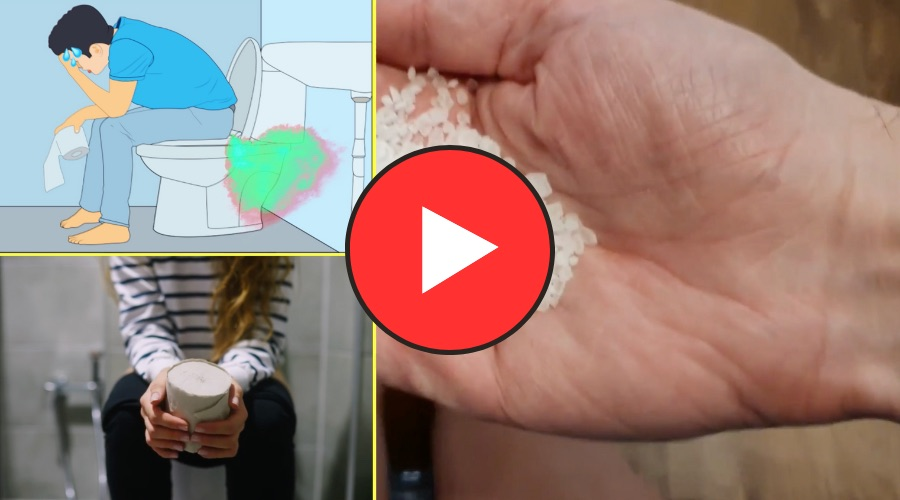
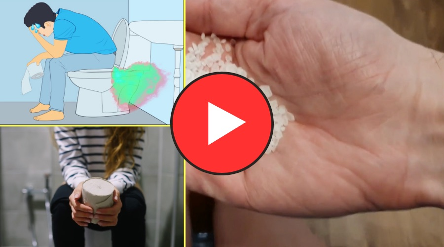

Intestino atrapado y vientre hinchado con frecuencia? Los científicos de Michigan señalan que el verdadero culpable es inmune a los probióticos y laxantes, pero puede eliminarse fácilmente en casa. (aprende en casa)
Durante varios años, médicos y expertos han afirmado que el estreñimiento, la hinchazón del vientre, los dolores agudos, la falta de sueño y la digestión lenta estaban asociados con la falta de fibra, poca agua o falta de bacterias buenas en el intestino.
Sin embargo, un estudio de la Universidad de Michigan en 2023 reveló que el villano es otro:

Este es un microbio azul apodado por los científicos como Vampiros Intestinales, debido a que estos vampiros intestinales son comunes en personas mayores de 40 años, este Vampiro se alimenta de la mucosidad intestinal y provoca sequedad en las paredes intestinales, lo que impide que sus heces se deslicen o hasta el recto y una vez que tu intestino está completamente seco, tus heces no se deslizan y terminas sufriendo estreñimiento, vientre hinchado y dolores agudos.
Con la intención de ayudar a miles de personas estos mismos científicos reveló un método 100% natural que se realiza en casa y que toma solo 1 minuto por la mañana, en este video podrás aprende cómo eliminar estos vampiros intestinales con este método casero sin tener que gastar dinero en probióticos, laxantes o costosas consultas con gastroenterólogo.
Haz clic en el botón de abajo y mira el breve vídeo que te explicará todo lo que necesitas.
Sin embargo, un estudio de la Universidad de Michigan en 2023 reveló que el villano es otro:

Este es un microbio azul apodado por los científicos como Vampiros Intestinales, debido a que estos vampiros intestinales son comunes en personas mayores de 40 años, este Vampiro se alimenta de la mucosidad intestinal y provoca sequedad en las paredes intestinales, lo que impide que sus heces se deslicen o hasta el recto y una vez que tu intestino está completamente seco, tus heces no se deslizan y terminas sufriendo estreñimiento, vientre hinchado y dolores agudos.
Con la intención de ayudar a miles de personas estos mismos científicos reveló un método 100% natural que se realiza en casa y que toma solo 1 minuto por la mañana, en este video podrás aprende cómo eliminar estos vampiros intestinales con este método casero sin tener que gastar dinero en probióticos, laxantes o costosas consultas con gastroenterólogo.
Haz clic en el botón de abajo y mira el breve vídeo que te explicará todo lo que necesitas.
 Haz click aquí para ver el vídeo
Haz click aquí para ver el vídeo